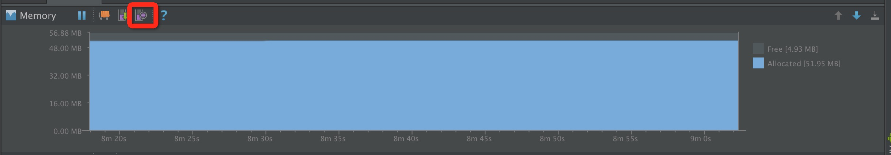
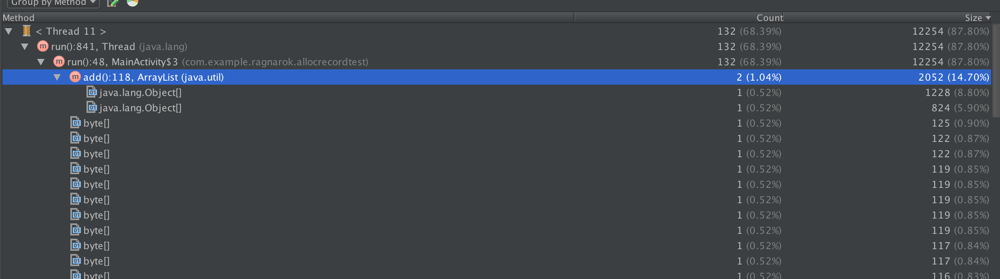
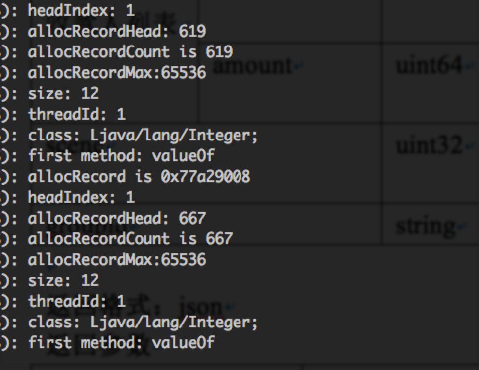

最近一直在做有关内存方面的优化工作，在做优化的过程，除了关注内存的申请量以及GC的情况之外，我们经常需要想方法找出是那些对象占用了大量内存，以及他们是如何导致GC的，这意味着我们需要获取对象申请的信息（大小，类型，堆栈等），我们这篇文章来介绍下几种获取对象申请信息的方法
Allocation Tracker
Allocation Tracker是android studio自带的一个功能，我们可以在MemoryMonitor中打开使用：

如上图，点击红框按钮，然后操作app，开始allocation tracking，当认为需要结束的时候，再次点击按钮，稍等片刻，即可以在android studio中dump出在 这段时间 内 新申请 对象的信息：

这种使用方式相当直观，可以看到申请对象大小，数量，还有堆栈等，通过这些信息，我们可以作为我们接下来进行内存优化的参考
但是，对于这种获取申请对象信息的方法，会存在几个问题：
- 获取的信息过于分散，中间夹杂着不少其他的信息，不完全是app申请的，可能需要进行不少查找才能定位到具体的问题
- 跟TraceView一样，无法做到自动化分析，每次都需要开发者手工开始/结束，对于某些问题的分析可能会造成不便，而且对于批量分析来说也比较困难
- 虽然在allocation tracking的时候，不会对手机本身的运行造成过多的性能影响，然而在停止allocation tracker的时候，直到把数据dump出来之前，会把手机完全卡死，时间过长甚至会直接ANR
对于这几个问题，特别是自动化分析来说，是否能够直接在代码上发起allocation tracker的请求并获得数据来分析呢？
在代码中发起allocation tracker请求
自然是可以的，不然为什么会有这个标题。。。
我们可以把Android Studio的源码clone下来，在这里可以找到对应的git地址。在clone下来之后，我们可以在./tools/adt/idea/android/src/com/android/tools/idea/ddms/actions/ToggleAllocationTrackingAction.java中看到android studio具体是如何发起和停止Allocation Tracker的：
发起和停止：
if (c.getClientData().getAllocationStatus() ==
ClientData.AllocationTrackingStatus.ON) {
c.requestAllocationDetails();
c.enableAllocationTracker(false);
if (myEvent == null) {
// Unexpected end of tracking, start now:
myEvent = myEvents.start(now, MemoryMonitorView.EVENT_ALLOC);
}
myEvent.stop(now);
myEvent = null;
}
else {
installListener(c, myProject);
c.enableAllocationTracker(true);
if (myEvent != null) {
// TODO add support for different end types (error, etc)
myEvent.stop(now);
}
myEvent = myEvents.start(now, MemoryMonitorView.EVENT_ALLOC);
}
c.requestAllocationStatus();
获取并解析数据：
AndroidDebugBridge.addClientChangeListener(new IClientChangeListener() {
@Override
public void clientChanged(Client client, int changeMask) {
if (client == listeningClient && (changeMask & Client.CHANGE_HEAP_ALLOCATIONS) != 0) {
final byte[] data = client.getClientData().getAllocationsData();
ApplicationManager.getApplication().invokeLater(new Runnable() {
@Override
public void run() {
try {
if (myProject.isDisposed()) {
return;
}
final CaptureService service = CaptureService.getInstance(myProject);
String name = service.getSuggestedName(listeningClient);
CaptureHandle handle = service.startCaptureFile(AllocationCaptureType.class, name);
service.appendDataCopy(handle, data);
.....
// Remove self from listeners.
AndroidDebugBridge.removeClientChangeListener(this);
}
}
});
可以看出来这应该是一个异步的过程，在发起请求之后，系统会开始记录，然后再次发起停止请求之后，请求获得内存申请的数据（通过c.requestAllocationDetails这一行），然后再预先注册好的IClientChangeListener回调当中，获得数据已经准备好的通知，然后再获取数据，进行分析
对于这里发起和停止Allocation的数据，以及注册的回调，大概涉及到了Client，AndroidDebugBridge，IClientChangeListener等几个接口，这几个接口均不是Android Studio/IDEA中自带的类，而是在ddmlib这个库中包含的，在android studio源码/tools/base/ddmlib目录中有其源码，另外，在/prebuilts/tools/common/offline-m2/com/android/tools/ddms/ddmlib目录中也有其预先build好的jar包。
ddmlib这个库的作用，是用来建立电脑和android手机上连接的AndroidDebugBridge，然后让其对手机发起一些请求，例如刚才的AllocationTracker，还有dump hprof，traceview，甚至可以直接发送JdwpPacket，自定义PC和手机上的通讯（当然这个接口并非是开放的）。
更重要的是，Google这个库是对外开放的，并且放到了maven当中，可以让开发者直接获取到这个库，不过似乎Google并没有大肆宣传这个，甚至连文档都没有。
既然如此，我们也可以仿照上面的代码，用代码发起一次AllocationTracker请求，并进行分析：
AndroidDebugBridge.init(true);
AndroidDebugBridge bridge = AndroidDebugBridge.createBridge("/path/to/your/adb/command", false);
while (!bridge.isConnected() && !bridge.hasInitialDeviceList()) {
try {
Thread.sleep(200);
}
catch (Exception e) {
System.out.println(e);
return;
}
}
if (bridge.getDevices() != null && bridge.getDevices().length > 0) {
IDevice device = bridge.getDevices()[0];
final Client client = device.getClient("com.example.ragnarok.allocrecordtest");
System.out.print("client: " + client);
if (client == null) {
return;
}
AndroidDebugBridge.addClientChangeListener(new AndroidDebugBridge.IClientChangeListener() {
public void clientChanged(Client cl, int changeMask) {
if (cl == client) {
if ((changeMask & Client.CHANGE_HEAP_ALLOCATIONS) != 0) {
System.out.println("clientChanged: " + cl + ", " + changeMask);
byte[] data = cl.getClientData().getAllocationsData();
if (data != null) {
AllocationInfo[] infoList = AllocationsParser.parse(ByteBuffer.wrap(data));
}
}
}
}
});
client.enableAllocationTracker(true);
new Timer().schedule(new TimerTask() {
@Override
public void run() {
client.requestAllocationDetails();
client.enableAllocationTracker(false);
}
}, 3000);
}
代码比较长，我们主要做了这些操作：
- 初始化AndroidDebugBridge，并获取连接上的第一个设备对应的
IDevice - 获取这个设备上"com.example.ragnarok.allocrecordtest"这个进程上对应的Client实例
- 注册回调，并在回调中获取AllocationTracker回来的数据，并调用
AllocationParser进行解析 - 发起和停止allocation tracker
最后在分析的时候，我们获得了一组AllocationInfo，存储了申请对象的信息：
public class AllocationInfo {
private final String mAllocatedClass;
private final int mAllocNumber;
private final int mAllocationSize;
private final short mThreadId;
private final StackTraceElement[] mStackTrace;
.....
}
因为现在可以用代码发起Allocation Tracker请求了，那我们就可以接入自动化分析，并过滤掉我们不需要的数据。
但是这样，也还是会有问题：
- 这种方法会占用adb端口，这意味着可能在使用的时候，需要停止掉其他地方对adb的使用
- 在停止allocation tracker之后，
requestAllocationDetails的调用还是会卡死手机，当然其实对于自动化分析来说，这里问题应该不大，但是对于使用者来说，还是造成了些许不爽
对于上面的第二个问题，我们先来分析下android上的JVM是如何响应发过来的allocation tracker请求的
Android的JVM如何响应allocation tracker请求（Dalvik only now）
我们先来看下Dalvik虚拟机是怎么响应这个请求的，下面仅以4.4.4的代码为例
首先，Dalvik虚拟机在收到Allocation Tracker的请求之后，在对JdwpPacket包进行解析之后，最后会在DdmVmInternal这个类中进行处理，这个类在/libcore/dalvik/src/main/java/org/apache/harmony/dalvik/ddmc/DdmVmInternal.java当中，其中有这么两个方法：
/**
* Enable or disable "recent allocation" tracking.
*/
native public static void enableRecentAllocations(boolean enable);
/*
* Return a boolean indicating whether or not the "recent allocation"
* feature is currently enabled.
*/
native public static boolean getRecentAllocationStatus();
很明显，这两个方法是用于开启和关闭Allocation Tracker，并且获得申请对象信息的数据的，然而是native的方法，对应的native代码在/dalvik/vm/native/org_apache_harmony_dalvik_ddmc_DdmVmInternal.cpp这里：
/*
* public static void enableRecentAllocations(boolean enable)
*
* Enable or disable recent allocation tracking.
*/
static void Dalvik_org_apache_harmony_dalvik_ddmc_DdmVmInternal_enableRecentAllocations(
const u4* args, JValue* pResult)
{
bool enable = (args[0] != 0);
if (enable)
(void) dvmEnableAllocTracker();
else
(void) dvmDisableAllocTracker();
RETURN_VOID();
}
/*
* public static byte[] getRecentAllocations()
*
* Fill a buffer with data on recent heap allocations.
*/
static void Dalvik_org_apache_harmony_dalvik_ddmc_DdmVmInternal_getRecentAllocations(
const u4* args, JValue* pResult)
{
ArrayObject* data;
data = dvmDdmGetRecentAllocations();
dvmReleaseTrackedAlloc((Object*) data, NULL);
RETURN_PTR(data);
}
而dvmEnableAllocTracker，dvmDisableAllocTracker，dvmDdmGetRecentAllocations这几个方法，经过几层的调用之后，最后是调用到了/dalvik/vm/AllocTracker.cpp这里的方法：
/*
* Enable allocation tracking. Does nothing if tracking is already enabled.
*
* Returns "true" on success.
*/
bool dvmEnableAllocTracker()
{
bool result = true;
dvmLockMutex(&gDvm.allocTrackerLock);
if (gDvm.allocRecords == NULL) {
gDvm.allocRecordMax = getAllocRecordMax();
ALOGI("Enabling alloc tracker (%d entries, %d frames --> %d bytes)",
gDvm.allocRecordMax, kMaxAllocRecordStackDepth,
sizeof(AllocRecord) * gDvm.allocRecordMax);
gDvm.allocRecordHead = gDvm.allocRecordCount = 0;
gDvm.allocRecords = (AllocRecord*) malloc(sizeof(AllocRecord) * gDvm.allocRecordMax);
if (gDvm.allocRecords == NULL)
result = false;
}
dvmUnlockMutex(&gDvm.allocTrackerLock);
return result;
}
/*
* Disable allocation tracking. Does nothing if tracking is not enabled.
*/
void dvmDisableAllocTracker()
{
dvmLockMutex(&gDvm.allocTrackerLock);
if (gDvm.allocRecords != NULL) {
free(gDvm.allocRecords);
gDvm.allocRecords = NULL;
}
dvmUnlockMutex(&gDvm.allocTrackerLock);
}
/*
* Generate a DDM packet with all of the tracked allocation data.
*
* On success, returns "true" with "*pData" and "*pDataLen" set.
*/
bool dvmGenerateTrackedAllocationReport(u1** pData, size_t* pDataLen)
{ .... } // 这个方法用于dump出gDvm.allocRecords中的数据
从上面的代码可以看出，在开启了Allocation Tracker之后，在Dalvik全局变量gDvm下，将其中的allocRecords指向了一块新的申请的内存区域，另外allocRecordHead指向最新申请的对象信息的index，allocRecordCount则是总的记录的数量，另外allocRecordMax则是整个Allocation Tracker所允许记录的最大申请对象信息的数目，在4.4.4这个版本下，这个值默认是65536，也可以在手机中的/sytem/build.prop中指定dalvik.vm.allocTrackerMax项的值。
这里很明显看出来，gDvm.allocRecords是用来记录新申请对象的信息的，而申请对象的时候，只要开启了Allocation Tracker，每次都会往这里添加一个记录，具体代码在这里：
首先这里是新申请对象地方，在/dalvik/vm/alloc/Alloc.cpp中：
/*
* Create an instance of the specified class.
*
* Returns NULL and throws an exception on failure.
*/
Object* dvmAllocObject(ClassObject* clazz, int flags)
{
Object* newObj;
....
/* allocate on GC heap; memory is zeroed out */
newObj = (Object*)dvmMalloc(clazz->objectSize, flags);
if (newObj != NULL) {
DVM_OBJECT_INIT(newObj, clazz);
dvmTrackAllocation(clazz, clazz->objectSize); /* notify DDMS */
}
return newObj;
}
而在dvmTrackAllocation方法，则是在/vm/AllocTracker.h中定义：
/*
* If allocation tracking is enabled, add a new entry to the set.
*/
#define dvmTrackAllocation(_clazz, _size) \
{ \
if (gDvm.allocRecords != NULL) \
dvmDoTrackAllocation(_clazz, _size); \
}
void dvmDoTrackAllocation(ClassObject* clazz, size_t size);
// dvmDoTrackAllocation的定义在/dalvik/vm/AllocTracker.cpp当中
/*
* Add a new allocation to the set.
*/
void dvmDoTrackAllocation(ClassObject* clazz, size_t size)
{
Thread* self = dvmThreadSelf();
if (self == NULL) {
ALOGW("alloc tracker: no thread");
return;
}
dvmLockMutex(&gDvm.allocTrackerLock);
if (gDvm.allocRecords == NULL) {
dvmUnlockMutex(&gDvm.allocTrackerLock);
return;
}
/* advance and clip */
if (++gDvm.allocRecordHead == gDvm.allocRecordMax)
gDvm.allocRecordHead = 0;
AllocRecord* pRec = &gDvm.allocRecords[gDvm.allocRecordHead];
pRec->clazz = clazz;
pRec->size = size;
pRec->threadId = self->threadId;
getStackFrames(self, pRec);
if (gDvm.allocRecordCount < gDvm.allocRecordMax)
gDvm.allocRecordCount++;
dvmUnlockMutex(&gDvm.allocTrackerLock);
}
分析到这里，Dalvik对Allocation Tracker的响应过程就非常清晰了：
- 在收到Allocation Tracker的请求的时候，首先给Dalvik全局变量
gDvm中的allocRecords字段指向一段新申请的内存，申请内存的大小，由gDvm.allocRecordMax指定 - 后续Dalvik每次新申请对象的时候，只要
allocRecords不为NULL，那就会不断的往allocRecords指向的内存区域中写入的新申请对象的信息，包括类型，大小，线程号，堆栈
而gDvm这个变量则具体是一个全局记录Dalvik虚拟机中状态的全局变量，定义和声明都在/dalvik/vm/Globals.h中：
struct DvmGlobals {
....
/*
* Used for tracking allocations that we report to DDMS. When the feature
* is enabled (through a DDMS request) the "allocRecords" pointer becomes
* non-NULL.
*/
pthread_mutex_t allocTrackerLock;
AllocRecord* allocRecords;
int allocRecordHead; /* most-recently-added entry */
int allocRecordCount; /* #of valid entries */
int allocRecordMax; /* Number of allocated entries. */
....
}
extern struct DvmGlobals gDvm;
而AllocRecord的定义，则是在/dalvik/vm/AllocTracker.cpp 中：
/*
* Record the details of an allocation.
*/
struct AllocRecord {
ClassObject* clazz; /* class allocated in this block */
u4 size; /* total size requested */
u2 threadId; /* simple thread ID; could be recycled */
/* stack trace elements; unused entries have method==NULL */
struct {
const Method* method; /* which method we're executing in */
int pc; /* current execution offset, in 16-bit units */
} stackElem[kMaxAllocRecordStackDepth];
};
#define kMaxAllocRecordStackDepth 16 /* max 255 */
可以看出来这里拿到的信息，跟直接使用ddmlib的是一样的
另外，可以看到gDvm的声明是为extern的，这意味着我们或许可以 直接 获取到这个变量，一颗赛艇！
不影响手机本身性能的情况下获取申请对象信息
从上面的代码分析可以看到，类型为DvmGlobals的gDvm这个变量被声明成了extern，并且为非static变量，这意味在dalvik的so中，我们可以直接在符号表中获取到这个变量，简单来说，测试的代码如下：
#include "Globals.h"
....
void * handle = dlopen("libdvm.so", RTLD_NOW);
snprintf(buff, 1024, "handle is 0x%x", handle);
LOGI("%s", buff);
t_gDvm = (struct DvmGlobals *)dlsym(handle, "gDvm");
if (t_gDvm) {
LOGI("get DvmGlobals");
// now t_gDvm->allocRecords is the allocation record data
}
上面的#include "Globals.h"是指Dalvik源码中的Globals.h头文件， 另外这段Native的代码需要打包在某个app当中，然后在开启Allocation Tracker之后（之前介绍的随便一种方法都可以），运行这段代码，那么t_gDvm->allocRecords中就是申请对象的数据了，可以直接读取里面的字段，打印出来大概是这样的：

由于是直接读取Dalvik本身记录对象信息的结构，没有了结束Allocation Tracker时候把数据dump出来的请求，这意味着完全不会影响手机本身的性能，而且对于对象信息的获取，也能够更加的及时，例如说每隔10s把数据拿出来分析。相对来说，对于之前使用ddmlib的方案，10s定时请求这么高的频率，很有可能跑一会直接就把手机卡死了。
但是对于这种方案，会存在兼容性问题，这里可以看到，我们获取gDvm变量的方式是用dlsym系统调用直接拿出来，然后强转成DvmGlobals类型，然而由于不同版本的Dalvik虚拟机中的DvmGlobals的定义不一样，可能会造成拿出gDvm这个符号之后，对应的allocRecords字段并不是真正的在这台机器上的allocRecords字段，出现数据的错乱，或者gDvm->allocRecords压根为NULL 。就目前的简单测试来，暂时只有MX3 4.4.4系统的flyme os能够正常操作，估计这里要适配大部分机器的话，工作量应该不少。
Notes:
- 关于Allocation Tracker在JVM层的响应，目前暂时只有Dalvik的分析，而ART对Allocation Tracker的处理似乎更加复杂，尚在研究中
- 这篇文章中的示例代码，可以从这里拿到